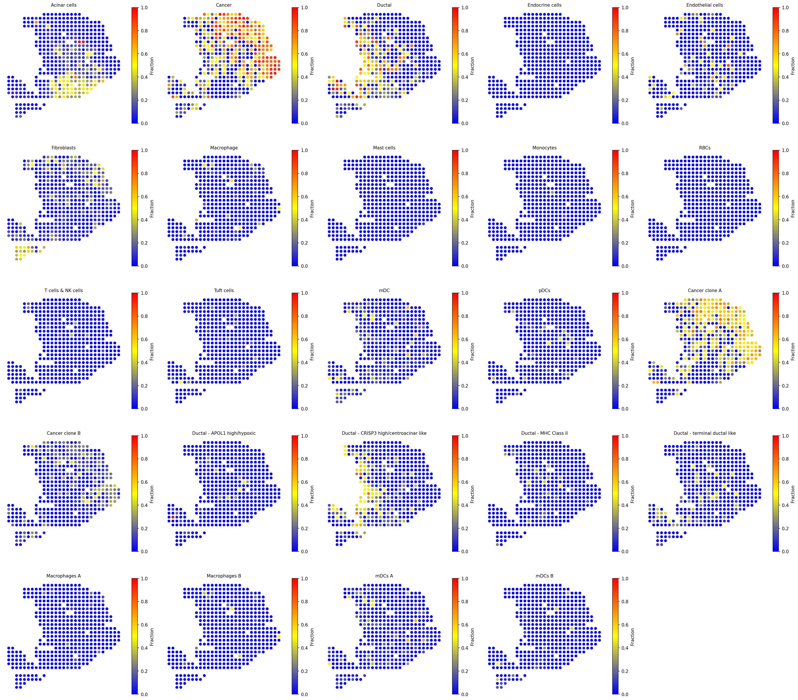
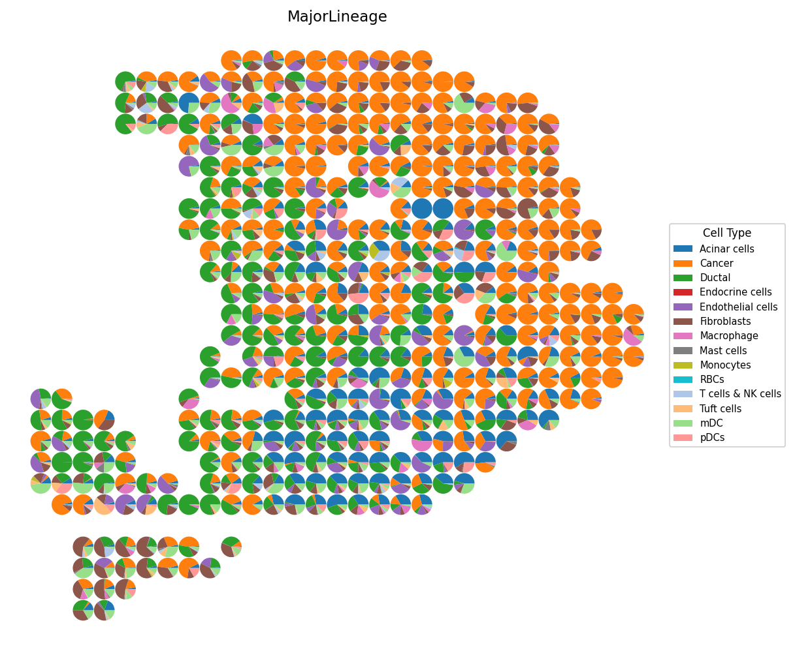
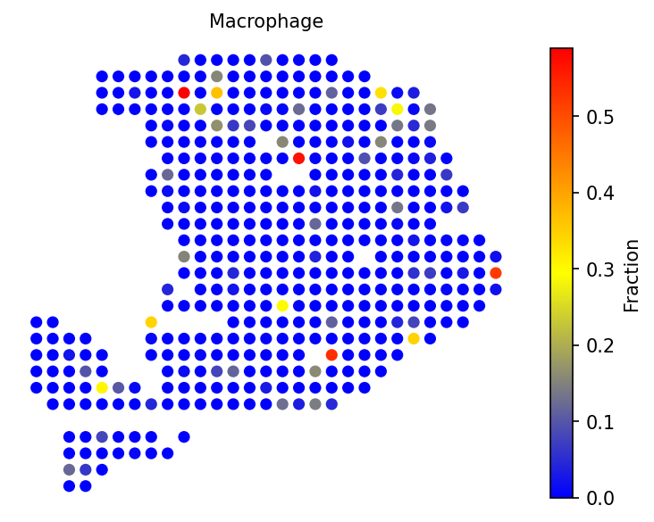
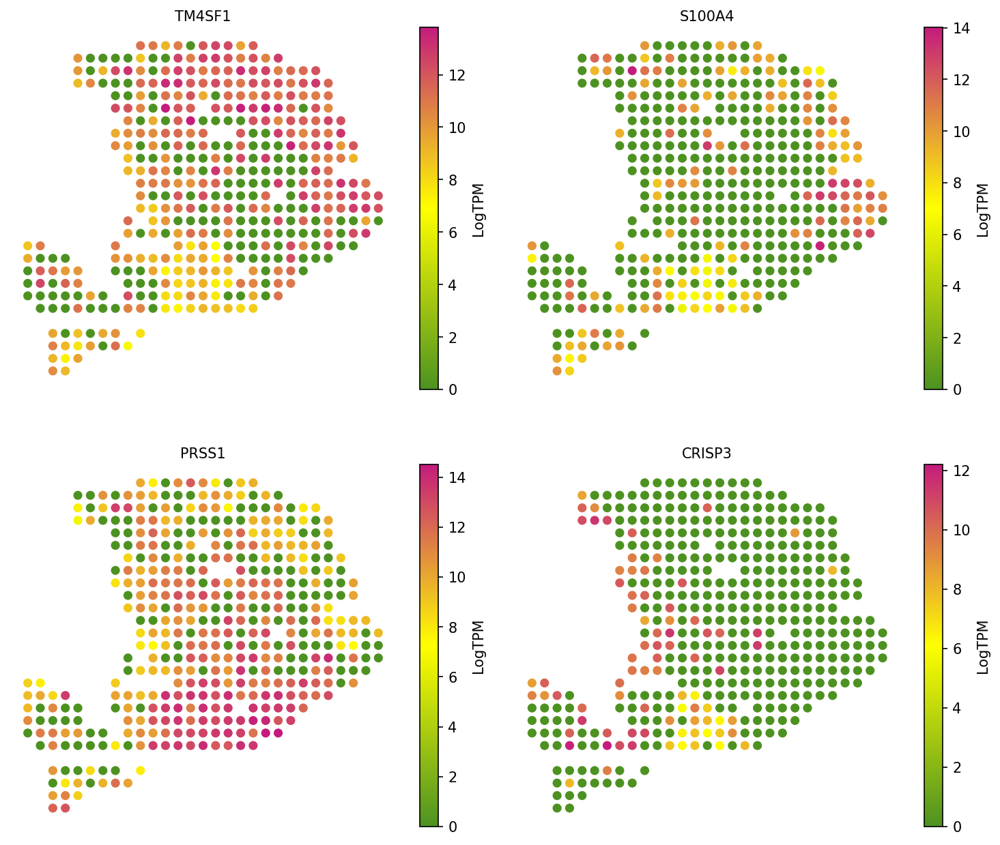

Cell Type Deconvolution for Old ST Pancreatic Ductal Adenocarcinoma
Python GPU-accelerated Adapted from the SpaCET R tutorial for pancreatic ductal adenocarcinoma with matched scRNA-seq
Overview
This tutorial demonstrates how to use spatial-gpu to deconvolve spatial transcriptomics data from a pancreatic ductal adenocarcinoma (PDAC) sample profiled on the "oldST" platform (Moncada et al., 2020). Each spot has a diameter of approximately 100 μm, capturing multiple cells per spot.
Unlike the Visium breast cancer tutorial which uses built-in reference signatures, this tutorial uses a matched scRNA-seq reference dataset from the same tumor for deconvolution. The matched reference provides a lineage tree describing the hierarchical relationship among cell types, enabling more accurate cell fraction estimation.
The spatial-gpu package provides a GPU-accelerated Python
implementation of the
SpaCET algorithm
(Nature Communications 14, 568, 2023). All functions work on
AnnData objects and
store results in adata.uns['spacet'].
API Mapping: R SpaCET → spatial-gpu
| R SpaCET | spatial-gpu (Python) |
|---|---|
| library(SpaCET) | import spatialgpu.deconvolution as spacet |
| create.SpaCET.object() | spacet.create_spacet_object() |
| SpaCET.deconvolution.matched.scRNAseq() | spacet.deconvolution_matched_scrnaseq() |
| SpaCET.visualize.spatialFeature() | spacet.visualize_spatial_feature() |
1. Create SpaCET Object
Load the oldST PDAC spatial transcriptomics data into an
AnnData object. The dataset contains a counts matrix and spot
coordinates from the original spatial transcriptomics platform.
import spatialgpu.deconvolution as spacet import anndata as ad # Load ST data from h5ad file adata = ad.read_h5ad("data/oldST_PDAC/st_PDAC.h5ad") # Inspect the object print(adata)
create_spacet_object()
function is used for non-10X platforms, while create_spacet_object_10x()
is specific to 10X Visium data.
2. Load scRNA-seq Reference
Load the matched single-cell RNA-seq reference dataset and the associated cell lineage tree. The lineage tree defines the hierarchical relationships among cell types and is required for the matched scRNA-seq deconvolution algorithm.
# Load matched scRNA-seq reference data sc_adata = ad.read_h5ad("data/oldST_PDAC/sc_PDAC.h5ad") # Extract the lineage tree from the reference lineage_tree = sc_adata.uns["lineage_tree"] # Inspect the reference print(sc_adata) print("Cell types:", sc_adata.obs["cell_type"].unique().tolist()) print("Lineage tree:", lineage_tree)
3. Deconvolve with Matched scRNA-seq
Run the matched scRNA-seq deconvolution algorithm. This method uses the single-cell reference profiles and lineage tree to estimate cell-type fractions at each spot via hierarchical constrained regression.
import pandas as pd # Prepare scRNA-seq inputs (counts, annotation, lineage tree) # sc_counts: genes x cells DataFrame sc_counts = pd.DataFrame( sc_adata.X.toarray().T if hasattr(sc_adata.X, 'toarray') else sc_adata.X.T, index=sc_adata.var_names, columns=sc_adata.obs_names, ) # sc_annotation: DataFrame with 'cellID' and 'cellType' columns sc_annotation = pd.DataFrame({ "cellID": sc_adata.obs_names, "cellType": sc_adata.obs["cell_type"].values, }) # Deconvolve using matched scRNA-seq reference adata = spacet.deconvolution_matched_scrnaseq( adata, sc_counts=sc_counts, sc_annotation=sc_annotation, sc_lineage_tree=lineage_tree, n_jobs=6, ) # View deconvolution results (cell types x spots) prop_mat = adata.uns['spacet']['deconvolution']['propMat'] print(prop_mat.iloc[:, :5])
4. Visualize Results
4a. All cell types
Visualize the spatial distribution of all deconvolved cell-type fractions with a unified color scale across panels.
# Visualize all cell type fractions with unified scale spacet.visualize_spatial_feature( adata, spatial_type="CellFraction", spatial_features=["All"], same_scale_fraction=True, point_size=1.5, ncols=5, )

4b. Cell type composition (pie charts)
# Cell type composition as scatter pie charts spacet.visualize_spatial_feature( adata, spatial_type="CellTypeComposition", spatial_features=["MajorLineage"], point_size=0.5, )

4c. Specific cell types
Examine individual cell types of interest, including cancer clones and tissue-specific cell populations.
# Visualize specific cell types spacet.visualize_spatial_feature( adata, spatial_type="CellFraction", spatial_features=["Cancer clone A", "Cancer clone B", "Acinar cells", "Ductal - CRISP3 high/centroacinar like"], ncols=2, )

4d. Gene expression validation
Validate the deconvolution results by visualizing marker gene expression. Each gene should show spatial concordance with its associated cell type.
# Visualize marker gene expression for validation spacet.visualize_spatial_feature( adata, spatial_type="GeneExpression", spatial_features=["TM4SF1", "S100A4", "PRSS1", "CRISP3"], ncols=2, )

Session Info
import spatialgpu print(f"spatial-gpu version: {spatialgpu.__version__}") import anndata, numpy, scipy, pandas, matplotlib print(f"anndata: {anndata.__version__}") print(f"numpy: {numpy.__version__}") print(f"scipy: {scipy.__version__}") print(f"pandas: {pandas.__version__}") print(f"matplotlib: {matplotlib.__version__}") try: import cupy print(f"cupy: {cupy.__version__} (GPU backend available)") except ImportError: print("cupy: not installed (CPU-only mode)")